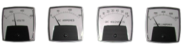

This condition will definitely affect the performance of the Precipitator since any field not operating correctly will have impact on the outlet emissions. When the currents are low and the voltage is normal to high the problem is typically due to the poor generation of corona causing current suppression. This reduced current flow reduces charging of particulate and reduced collection. Possible causes of the above events are as follows: